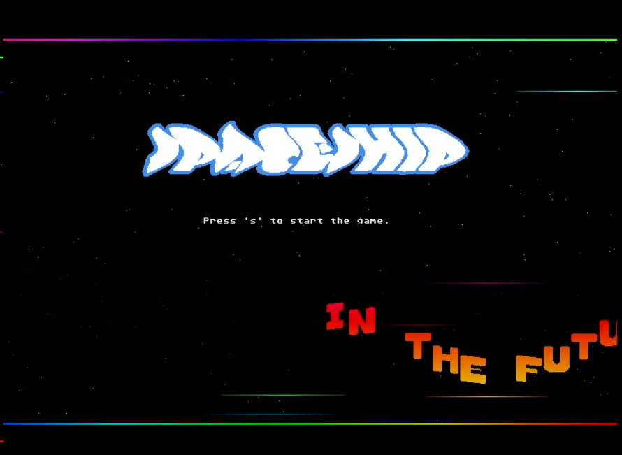

Old-School Retro Arcade Spaceship

In the future the aliens are about to conquer the earth. You are a skilled spaceship pilot and the last hope of mankind. Explore the asteroid belt between mars and jupiter and destroy all the aliens. Try to avoid the asteroids they can destroy your spaceship. You have only one minute.
- GFX: Atari ST/Custom
- Font: Atari ST
- Music: Atari ST Chiptune
- FX: Atari ST/Custom
In developing this application, I utilized a toolkit consisting of Win XP, Cygwin 32-Bit (for development environment setup), OpenGL, OpenAL, and implemented the application using C++. This allowed me to develop the application to run on PC, Mac, and Linux platforms. One of the main challenges during the development process was incorporating elements from Atari ST, which required additional research and implementation. Through this process, I have learned valuable lessons about cross-platform development, integration of legacy technologies, and ensuring compatibility across different operating systems.
Game Download: Itch.io Installation Instructions:- Download the appropriate archive for your platform.
- Extract the contents to a desired location.
- Install OpenAL (included in the archive).
- Run the .exe file to start the game.
- 08.06.24 Bugfix Win 11 compatibility